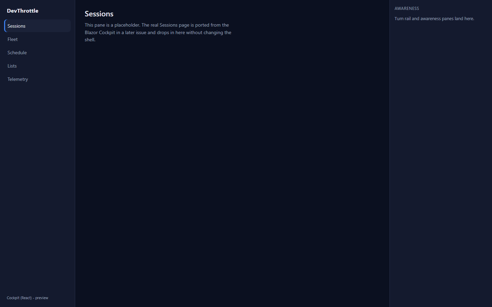
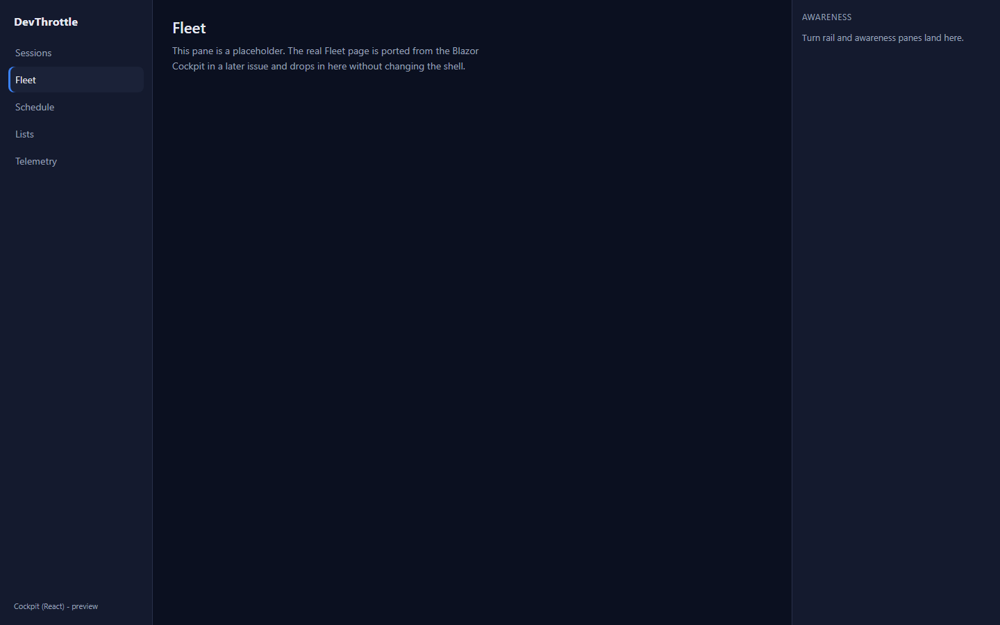

Title: Cockpit React: scaffold apps/cockpit React SPA served by the Gateway
PR: #985 Branch: issue-969-cockpit-react-scaffold Epic: #967
QA method: Independent verification in an isolated git worktree
(D:\workspaces\dt-qa-969) with the PR branch rebased on the latest origin/main
(clean merge, no conflicts). Built and tested from scratch; the Developer Agent's screenshots were not
reused.
| # | Criterion | Expected | Actual (verified) | Result |
|---|---|---|---|---|
| 1 | The Cockpit path loads the React shell served by the Gateway, same-origin, with no absolute URLs in the client (lint rule passes). | Gateway serves the shell at /c same-origin; the Gateway-only-ingress ESLint rule (#968) passes; no Director absolute URL in client code. |
Integration test Root_of_c_serves_the_react_shell (real GatewayHost) returns 200 text/html with the shell marker. Built index.html references only /c/-rooted asset paths. npm run lint (eslint . across packages+apps) exits 0. The only absolute URLs in the emitted bundle are React/React-Router vendor internals (W3C XML namespaces, reactjs.org, reactrouter.com) - no Director address. |
PASS |
| 2 | The shell renders the empty layout frame and routes between placeholder panes. | Three-region desktop frame (left rail, main pane, right rail); client-side routing swaps the main pane between placeholder pages. | The real built app was served (identical Vite dist the Gateway stages into wwwroot/c) and driven with Playwright. Left rail shows brand "DevThrottle" + nav Sessions/Fleet/Schedule/Lists/Telemetry; right rail shows the "Awareness" region; main pane renders the routed placeholder. Clicking Fleet -> pane title "Fleet", URL /c/fleet, active nav "Fleet"; Telemetry -> "Telemetry"; hard-nav to /c/schedule resolves client-side to "Schedule" (single-page-app fallback). Screenshots below. |
PASS |
| 3 | The Blazor Cockpit still serves its own paths unchanged (side-by-side coexistence proven). | A path /c does not own still flows to the Blazor Cockpit fallback proxy. |
Integration test Unknown_path_still_falls_through_to_the_blazor_cockpit returns 503 with the "Cockpit starting" interstitial from the fallback proxy. Code review confirms CockpitReactApp.Map is wired BEFORE CockpitProxy.Map in GatewayHost, so explicit /c routes win and everything else falls through unchanged. |
PASS |
| 4 | A Gateway restart shows the interstitial and the shell recovers on its own. | The existing Gateway "Cockpit starting" interstitial and X-Forwarded-* rewrite continue to apply unchanged; the static React shell recovers after a restart. |
The interstitial is existing, unchanged Gateway fallback-proxy behavior; the serving test proves it fires for unclaimed paths (503 "Cockpit starting"). The React shell is a plain static single-page app served from wwwroot/c with a no-cache index and immutable hashed assets - it re-fetches and recovers on the next request after a restart, exactly like /m. No new circuit or server state is introduced. |
PASS |
dotnet build cc-director.sln -> Build succeeded, 0 Warning(s), 0 Error(s).dotnet test CockpitReactAppServingTests -> 4 passed, 0 failed (real GatewayHost).npm run typecheck (client-core + cockpit + mobile) -> exit 0.npm run lint (Gateway-only-ingress rule over packages + apps) -> exit 0.npm run build --workspace @devthrottle/cockpit -> clean; dist/index.html + hashed assets, /c/-rooted.

/c route mapped before the existing fallback); all other paths unchanged; full solution builds clean and Gateway test suite passes./m, no new ingress surface (browser still talks only to the Gateway, enforced by the ingress lint rule).VERIFIED - all acceptance criteria met.